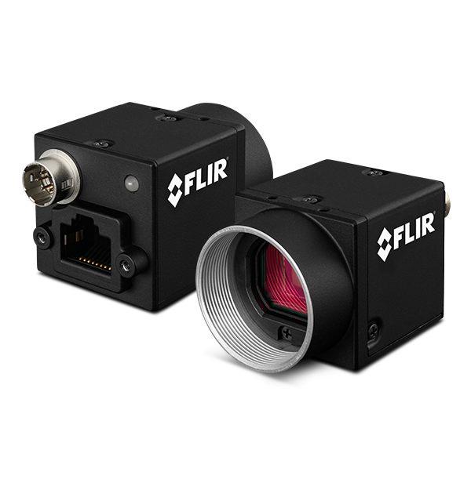
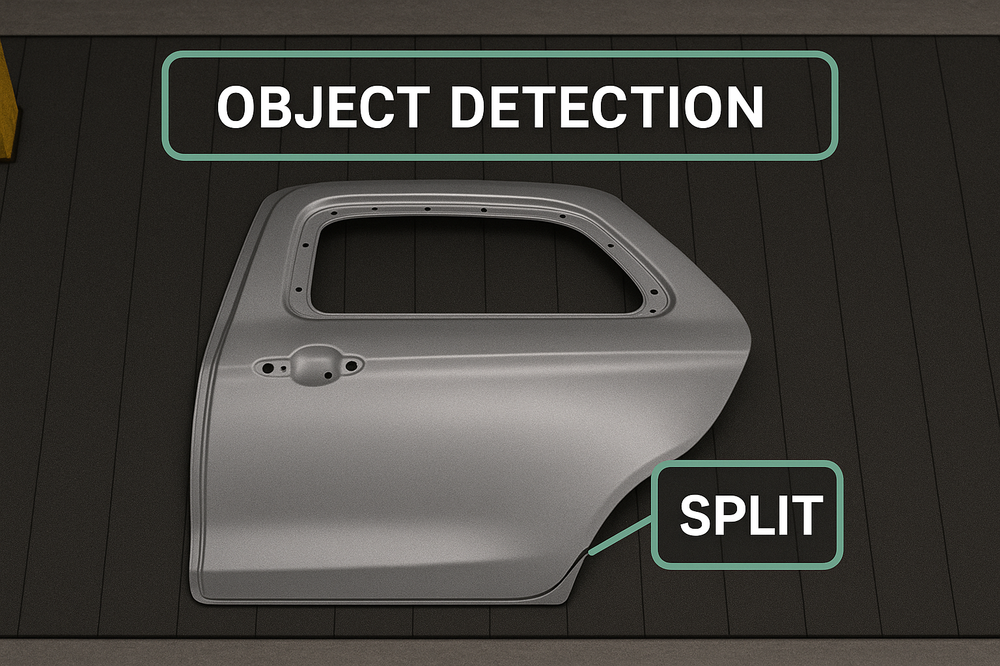

Gallery



Industrial-grade vision pipeline detecting sheet-metal splits in real time at high throughput.
← Back to Home
Built a scalable, distributed vision system leveraging Python, PyTorch, and high-resolution GigE camera streams. Containerized each component with Docker Compose and orchestrated an asynchronous ZeroMQ pipeline to achieve real-time split classification across multiple production lines. Developed modular services to reliably detect metal splits with 98%+ accuracy, and learned to architect robust distributed systems under real-time constraints.
The custom HMI offers real-time visualization of split detections, system health metrics, and historical reports. EOL stations provide pass/fail decisions with seamless integration into factory automation PLCs. Deployed on-premises with minimal dependencies and remote upgrade capabilities.